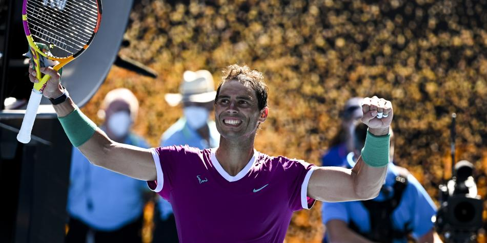
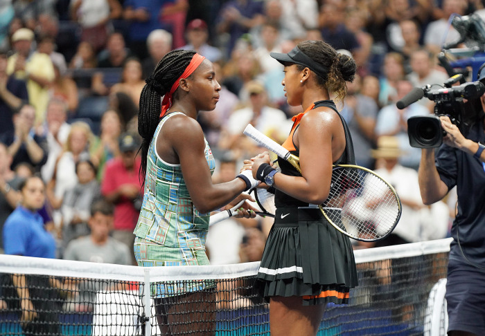

Golpe Maestro es un club de tenis creado por un grupo de amigos apasionados por este deporte.
Nuestra misión es promover la práctica del tenis en la comunidad y crear un espacio donde personas
de todas las edades puedan disfrutar y aprender.

Actividades
Golpe maestro nace con muchas ganas de aportar a la comunidad todo lo que pueda. Por esta razón, hemos propuesto
una
serie de actividades que queremos llevar a cabo.
Clases y talleres para todas las edades
Queremos dedicarnos a organizar talleres tanto para personas mayores como para niños, con el objetivo de
compartir la pasión por el tenis y fomentar la actividad física en todas las edades.
Charlas motivacionales y de compañerismo
Nuestra misión va más allá de las líneas de la cancha. Realizamos charlas inspiradoras para fomentar el
compañerismo y fortalecer los lazos entre los miembros del club. Creemos que el tenis no solo es un juego, sino
una forma de unir a las personas y crear una comunidad sólida.
Liga de tenis para competir de manera amistosa
En nuestro club, también organizamos una liga de tenis entre nuestros miembros, brindando la oportunidad de
participar en competiciones amistosas y fortalecer los lazos dentro de la comunidad de tenis.
El tenis es más que un deporte, es una escuela de vida.

Naomi Osaka y Coco Gauf, un ejemplo a seguir en la cancha y en la vida.
Unirse a Golpe maestro
Si compartes nuestra pasión por el tenis y deseas formar parte de una comunidad activa y acogedora,
¡únete a Golpe maestro! Estamos abiertos a personas de todas las edades y niveles de habilidad.